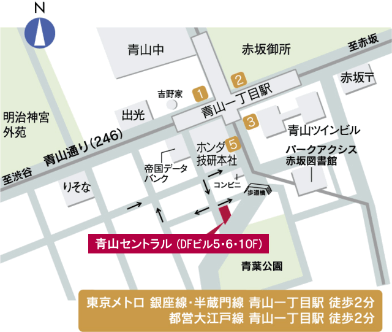

交通アクセス｜青山セントラルのレンタルオフィス｜Openoffice：東京・大阪をはじめ全国に50拠点以上
【個室レンタルオフィス】オープンオフィス 青山セントラル
Access - 交通アクセス

(注)略図ですので、縮尺、建物の外観等は実際と異なります。


● 地下鉄 銀座線 半蔵門線 大江戸線 「青山一丁目」 5番出口から徒歩2分
 5出口から右（歩道橋が見える側）へずっと歩き徒歩2分。銀の門のビル。
5出口から右（歩道橋が見える側）へずっと歩き徒歩2分。銀の門のビル。
〒107-0062 東京都港区南青山2-2-8 DFビル5Ｆ